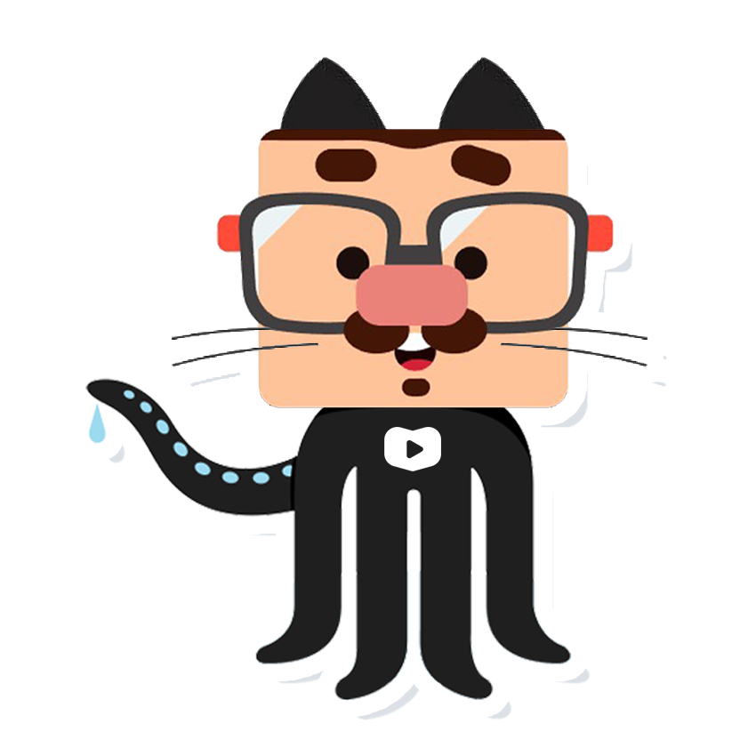

Inserir imagens em HTML é muito simples, tanto no conteúdo quanto lá em cima, como ícone de favoritos!

Você pode colocar várias imagens de vários tamanhos diferentes, use com sabedoria qual imagem se adequarar melhor ao seu site, segue os modelos abaixo:
Imagem em tamanho GG
Imagem em tamanho M

Imagem em tamnho P

Imagem em tamanho PP

Imagem em formado de Ícone